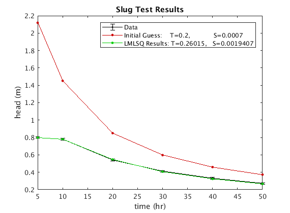
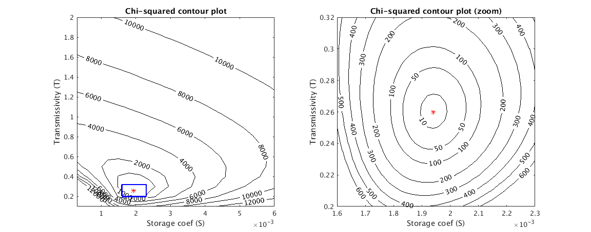

Contents
clear
close all
Part b: Determine S and T
t = [5 10 20 30 40 50]';
hm = [0.80 0.78 0.54 0.41 0.33 0.27]';
T = sym('T');
S = sym('S');
Q = 50;
d = 60;
s = 0.01;
n = length(t);
Cd = eye(n)*(s.^2);
Cdi = inv(sqrt(Cd));
h1 = Q./(4.*pi.*T.*t);
h2 = exp((-(d.^2).*S)./(4.*T.*t));
hd = h1.*h2;
h = Cdi*(hd-hm);
fiS = diff(h, S);
fiT = diff(h, T);
J = [fiS fiT];
S0 = 7e-4;
T0 = .2;
var0 = [S0; T0];
ep = 1e-9;
[x, k, Cm, chi2] = LMLSQ(h, var0, J, ep);
disp(['Number of iterations to convergence: ' num2str(k)]);
Number of iterations to convergence: 10
Part c: Sate S and T with STD
Sf = x(1);
Tf = x(2);
sm = diag(Cm);
Ssig = sqrt(sm(1));
Tsig = sqrt(sm(2));
disp(['Calculated T with 1-sigma error: ' num2str(Tf) char(177) num2str(Tsig)]);
disp(['Calculated S with 1-sigma error: ' num2str(Sf) char(177) num2str(Ssig)]);
Calculated T with 1-sigma error: 0.26015±0.0036874
Calculated S with 1-sigma error: 0.0019407±1.6014e-05
Part d: plot
figure(1); hold on; box on;
errorbar(t, hm, sqrt(diag(Cd)), '-k.', 'markersize', 10);
T = T0;
S = S0;
h0 = eval(subs(hd));
plot(t, h0, '-k.', 'markersize', 10, 'color', [.8 0 0]);
T = Tf;
S = Sf;
hf = eval(subs(hd));
plot(t, hf, '-k.', 'markersize', 10, 'color', [0 .8 0]);
xlabel('time (hr)');
ylabel('head (m)');
title('Slug Test Results');
legend('Data', ...
['Initial Guess: T=' num2str(T0) ', S=' num2str(S0)], ...
['LMLSQ Results: T=' num2str(Tf) ', S=' num2str(Sf)]);

Part e: Chi^2 contours
Ti = [.1:.1:2]';
Si = [3e-4:3e-4:6e-3]';
X2 = [];
idx = [];
for i=1:length(Ti)
for j = 1:length(Si)
T = Ti(i);
S = Si(j);
r = eval(subs(h));
xi = r'*r;
X2 = [X2; xi];
idx = [idx; i j];
end
end
X2r = reshape(X2, length(Si), length(Ti))';
figure('units', 'normalized', 'outerposition', [.2 .2 .8 .6]); hold on;
subplot(1,2,1); hold on; box on;
[col,row] = meshgrid(Si,Ti);
[M,c] = contour(col, row, X2r, [1e3 2e3:2e3:12e3], 'ShowText','on', 'color', 'k');
xlabel('Storage coef (S)');
ylabel('Transmissivity (T)');
plot(Sf, Tf, 'r*');
title('Chi-squared contour plot');
Tz1 = .2; Tz2 = .32;
Sz1 = 1.6e-3; Sz2 = 2.3e-3;
plot([Sz1 Sz1 Sz2 Sz2 Sz1], [Tz1 Tz2 Tz2 Tz1 Tz1], '-b', 'linewidth', 2);
Ti = [Tz1:.005:Tz2]';
Si = [Sz1:.2e-4:Sz2]';
X2 = [];
idx = [];
for i=1:length(Ti)
for j = 1:length(Si)
T = Ti(i);
S = Si(j);
r = eval(subs(h));
xi = r'*r;
X2 = [X2; xi];
idx = [idx; i j];
end
end
X2r = reshape(X2, length(Si), length(Ti))';
ax2 = subplot(1,2,2); hold on; box on;
[col,row] = meshgrid(Si,Ti);
[M,c] = contour(col, row, X2r, [10 50 100 1e2:1e2:6e2], 'ShowText','on', 'color', 'k');
xlabel('Storage coef (S)');
ylabel('Transmissivity (T)');
plot(Sf, Tf, 'r*');
title('Chi-squared contour plot (zoom)');

part f: P-value calculation
p_value = chi2cdf(chi2,n-length(var0), 'upper')
p_value =
0.9010